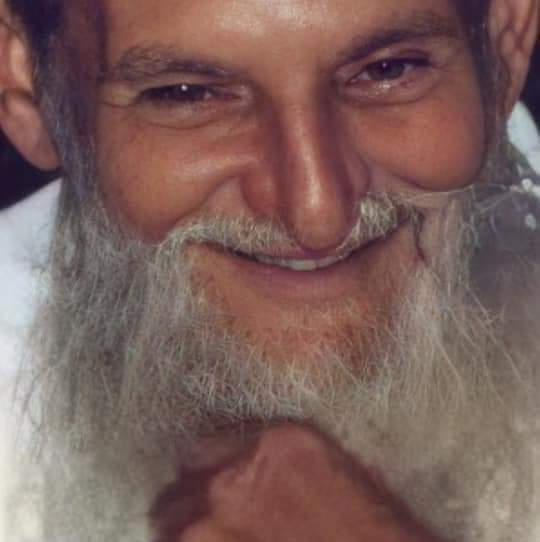

Sessões do Mês

Bem vindos a Nossa casa!
Seja bem vindo ao sete estrelas
Por aqui voce buscador podera estar por dentro de nossas programações e tirar suas duvidas sobre nossa casa e a doutrina deixada por mestre Irineu e difundida pelo nosso querido padrinho Sebastião. O Santo Daime
Ficamos muito felizes em recebe-los.